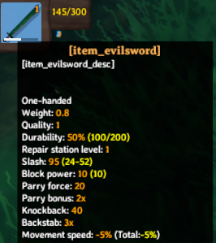

Items
Valheim items can be equipment, resources, or building pieces. In this tutorial you will learn how to set up custom items within the game, either based upon existing assets, or through the creation of entirely custom assets.
Note: This example requires assets to be loaded, as well as localizations.
Cloning existing prefabs
In this example, we will clone a resource and a weapon which the use may equip. In order to do this, we will need to reference already instantiated game assets. One method of doing so is by subscribing to the CopyOtherDB method of the ObjectDB, which instantiates game assets at runtime:
private voic Awake()
{
On.ObjectDB.CopyOtherDB += addClonedItems;
}
First we use the CustomItem constructor to define the name of our item, and the existing prefab name which it should be cloned from. The item can be immediately added via the AddItem method, and then modified to make our clone a little bit more unique.
private void AddClonedItems(On.ObjectDB.orig_CopyOtherDB orig, ObjectDB self, ObjectDB other)
{
// You want that to run only once, Jotunn has the item cached for the game session
if (!clonedItemsAdded)
{
// Create and add a custom item based on SwordBlackmetal
CustomItem CI = new CustomItem("EvilSword", "SwordBlackmetal");
ItemManager.Instance.AddItem(CI);
// Replace vanilla properties of the custom item
var itemDrop = CI.ItemDrop;
itemDrop.m_itemData.m_shared.m_name = "$item_evilsword";
itemDrop.m_itemData.m_shared.m_description = "$item_evilsword_desc";
// Create and add a recipe for the copied item
recipeEvilSword(itemDrop);
clonedItemsAdded = true;
}
// Hook is prefix, we just need to be able to get the vanilla prefabs, Jotunn registers them in ObjectDB
orig(self, other);
}
If we load up the game, type devcommands into the console(F5), and spawn EvilSword we can now see that we have a new item available to us:


As you may notice, our item does not hold the display text we might prefer. In order to resolve this you can read our localization tutorial.
Item Recipe's
In this example, we create a method named recipeEvilSword which adds a new crafting bench recipe for our custom item. In particular, this recipe includes a custom resource. We will use the native Recipe object and instantiate a new instance, and then define some basic properties of the recipe, such as the item which it produces, the piece where it can be crafted, and the resources required to craft the product. You will notice that before we add our native recipe that we wrap it inside of a CustomRecipe. This wrapper is mostly to facilitate Jötunn's FixReferences for prefabs which include mock references but does not really have any affect for this specific scenario. Notice both fixRef params are set to false, this is because we will use the PrefabManager's cache to acquire a reference to native assets such as the crafting bench, and required resources to define the recipe's conditions.
private static void RecipeEvilSword(ItemDrop itemDrop)
{
// Create and add a recipe for the copied item
Recipe recipe = ScriptableObject.CreateInstance<Recipe>();
recipe.name = "Recipe_EvilSword";
recipe.m_item = itemDrop;
recipe.m_craftingStation = PrefabManager.Cache.GetPrefab<CraftingStation>("piece_workbench");
recipe.m_resources = new Piece.Requirement[]
{
new Piece.Requirement()
{
m_resItem = PrefabManager.Cache.GetPrefab<ItemDrop>("Stone"),
m_amount = 1
},
new Piece.Requirement()
{
m_resItem = PrefabManager.Cache.GetPrefab<ItemDrop>("CustomWood"),
m_amount = 1
}
};
CustomRecipe CR = new CustomRecipe(recipe, false, false);
ItemManager.Instance.AddRecipe(CR);
}
Instantiating items from prefabs, RecipeConfig's
In the previous examples we saw that its possible to easily clone existing items and customise our recipe's required for the items, however these examples are rather verbose, and requires a fair amount of setup. In order to better facilitate configurations such as these, we have introduced *Config abstractions such as the RecipeConfig and RequirementConfig, which exposes common properties such as the ItemDrop, CraftingStation, and Resources.
Similarly in this example instead of cloning our prefabs, we are just going to import a custom prefab directly from an asset bundle, which is exceedingly convenient using Jötunn's asset loading helpers:
private void CreateBlueprintRune()
{
// Create and add a custom item
// CustomItem can be instantiated with an AssetBundle and will load the prefab from there
CustomItem rune = new CustomItem(BlueprintRuneBundle, "BlueprintRune", false);
ItemManager.Instance.AddItem(rune);
// Create and add a recipe for the custom item
CustomRecipe runeRecipe = new CustomRecipe(new RecipeConfig()
{
Item = "BlueprintRune",
Amount = 1,
Requirements = new PieceRequirementConfig[]
{
new PieceRequirementConfig {Item = "Stone", Amount = 1}
}
});
ItemManager.Instance.AddRecipe(runeRecipe);
}

We have now added two custom items, both of which can be equipped, as well as a custom resource which is used to create items. This concludes the items tutorial. Go back to the index.